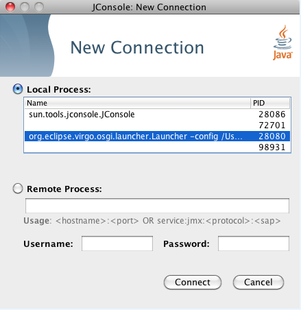
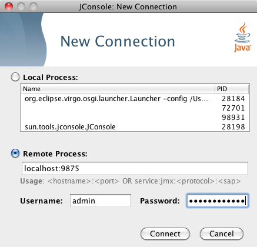
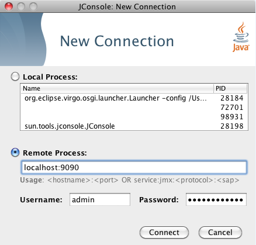
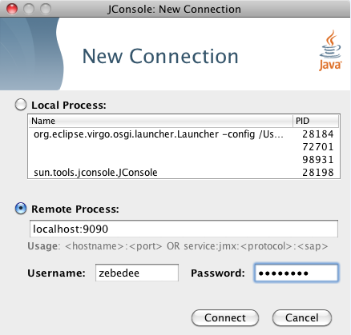

9875
and the default username and password are admin and springsource.
To start Virgo Tomcat Server with default JMX access enabled, run startup.sh passing
in no arguments:
prompt$ cd $SERVER_HOME prompt$ bin/startup.sh
To start JConsole, run the jconsole.sh script, located in the bin directory, as shown:
prompt$ cd $SERVER_HOME prompt$ bin/jconsole.sh
The following image shows how to specify a local connection using JConsole.

The following image shows how to specify a remote connection in JConsole that uses SSL with the default
username/password (admin/springsource and default secure port of 9875).

To start with the JMX remote access on a specific port number other than the default 9875,
pass this port number in as the value
of the -jmxport argument:
prompt$ cd $SERVER_HOME prompt$ bin/startup.sh -jmxport 9090
This will start the Virgo Tomcat Server with JMX enabled for remote connections on port 9090.

To start the JMX remote access with a custom username and password, update the $SERVER_HOME/configuration/org.eclipse.virgo.kernel.users.properties file. First specify the custom username by changing the value of the role.admin property. Then set the password of this new user by adding a new property called user.username, where username refers to the actual name of the user. Finally, restart VTS for the changes to take effect.
For example, if you want change the JMX remote access username to zebedee with password florence, change the file as follows:
################## # User definitions ################## user.zebedee=florence ################## # Role definitions ################## role.admin=zebedee
Specify the custom username in JConsole as shown.

To start the JMX remote access using a custom SSL certificate, edit the file located at
$SERVER_HOME/configuration/keystore. If you wish to use a different keystore,
pass this filename in as the value for the -keystore argument and the keystore
password in as the value for the -keystorePassword argument:
prompt$ cd $SERVER_HOME prompt$ bin/startup.sh -keystore customKeystore -keystorePassword customKeystorePassword
This will start the Virgo Tomcat Server with JMX enabled for remote connections using an SSL certificate from
customKeystore with a password of customKeystorePassword.
To start Virgo Tomcat Server with default JMX access enabled, run startup.bat passing
in no arguments:
prompt> cd %SERVER_HOME% prompt> bin\startup.bat
To start JConsole, run the jconsole.bat script, located in the bin directory, as shown:
prompt> cd %SERVER_HOME% prompt> bin\jconsole.bat
The following image shows how to specify a local connection using JConsole.
The following image shows how to specify a remote connection in JConsole that uses SSL with the default
username/password (admin/springsource and default secure port of 9875).
To start with the JMX remote access on a specific port number other than the default 9875,
pass this port number in as the value of the -jmxport argument:
prompt> cd %SERVER_HOME% prompt> bin\startup.bat -jmxport 9090
This will start the Virgo Tomcat Server with JMX enabled for remote connections on port
9090.
To start the JMX remote access with a custom username and password, update the %SERVER_HOME%\configuration\org.eclipse.virgo.kernel.users.properties file. First specify the custom username by changing the value of the role.admin property. Then set the password of this new user by adding a new property called user.username, where username refers to the actual name of the user. Finally, restart VTS for the changes to take effect.
For example, if you want change the JMX remote access username to zebedee with password florence, change the file as follows:
################## # User definitions ################## user.zebedee=florence ################## # Role definitions ################## role.admin=zebedee
Specify the custom username in JConsole as shown.
To start the JMX remote access using a custom SSL certificate, edit the file located at
%SERVER_HOME%\configuration\keystore. If you wish to use a different
keystore, pass this filename in as the value for the -keystore argument and the
keystore password in as the value for the -keystorePassword argument:
prompt> cd %SERVER_HOME% prompt> bin\startup.bat -keystore customKeystore -keystorePassword customKeystorePassword
This will start the Virgo Tomcat Server with JMX enabled for remote attach using an SSL certificate from
customKeystore with a password of customKeystorePassword.